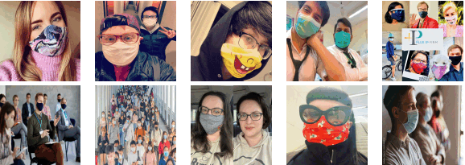

|
|
Masked face recognition using deep learning
[thesis.pdf] [code]
During the tenure of my master's studies amid the COVID-19 pandemic, I made a
deliberate choice to align my dissertation with this pressing global issue. The pandemic has
prompted widespread mask-wearing as a protective measure to curb virus transmission. However,
this crucial practice poses significant challenges for facial recognition systems, with
approximately half of the face concealed by masks. In response to this dilemma, my dissertation
revolves around the theme of "Masked Face Recognition," where I introduce an innovative approach
dedicated to reconstructing the obscured facial features beneath the mask region. To tackle this
problem effectively, I propose the application of Generative Adversarial Networks (GANs) for
identity-preserving inpainting. By harnessing the power of GANs, our method empowers us to generate
comprehensive facial representations even in the presence of masks. Furthermore,
I am proud to share that the proposed method has been successfully implemented as a commercial product at
Shahaab-Co
#GAN #ABANet #Image_Inpainting #Attention #dilaited Convoloution
Python Pytorch
|
|

|
MFSD: Masked Face Segmentation Dataset
sadjad rezvani, Mansoor Fateh, Hossein Khosravi
[paper] [Access dataset]
As an integral component of my master's thesis, I undertook the preprocessing stage, which necessitated
the utilization of binary mask region images. This was a prerequisite for the subsequent training of a dedicated neural
network designed to fulfill this task efficiently. However, the availability of an appropriate dataset
for network training was a preliminary concern. Existing masked face datasets are not procedure binary segmentation maps
because Segmenting mask regions manually is a time-consuming operation. In response to this challenge, I contributed to the creation
of the Masked Face Segmentation Dataset (MFSD),which addresses the dearth of suitable training data for mask segmentation tasks.
This pioneering dataset encompasses a comprehensive collection of 11,601 images, each featuring 12,758 accurately masked faces.
This endeavor seeks to alleviate the obstacles associated with mask region segmentation by providing a valuable resource for researchers in this domain.
#python-crawler #Selenium #BeautifulSoup #masked face detection #labelme tool
Python
|
|
|
ABANet: Attention Boundary-Aware Network for image segmentation
sadjad rezvani, Mansoor Fateh, Hossein Khosravi
[paper] [code]
In this article, we suggested an ABANet architecture
with a hybrid loss for mask face segmentation. Firstly, we
adopted an attention gate in skip connections to capture
more specific information. Experimental results show that
ABANet can obtain superior segmentation performance
by adding a series of AG modules to the skip connections.
In addition, the hybrid loss is utilized to evaluate training
at the pixel, patch, and map levels, maintaining training
stability and adjusting to unbalanced positive and negative
sample distributions.
#U-Net #Attention Gate #Refinement Network #Hybrid Loss
Python Pytorch
|
|
|
Salt Crack Sorting Machine
sadjad rezvani, Shahaab-Co
This was an industrial project that was implemented in 2021 at a salt factory.
The objective of this project was the purification of impurities from salt. The project is generally
composed of two phases: software and hardware. In the software phase, the task of detecting impurities
was accomplished using image processing, while in the hardware phase, operations of suction and removal
of impurities were carried out using servo motors and a blower. I was responsible for the software part
of this work, which was successfully completed.
# Blob Detection
C++ OpenCV C#
|
|
|
Ipelak(Plate Recognition Software)
sadjad rezvani, Shahaab-Co
Since 2019, when I joined Shahaab Company, along with several colleagues, we embarked on developing
license plate recognition software. The company had been working on the license plate recognition library(satpa)
in previous years. After several months of development, the software was created and made available for sale on the
website. In this project, my responsibility was database design and maintaining the entire back end of an application. Currently, this software stands as one of
the most comprehensive and well-known license plate recognition solutions in Iran. To familiarize yourself with the capabilities of this software,
you can visit the Shahaab Company website.
C# sql wpf
|
[Web Cite]
|